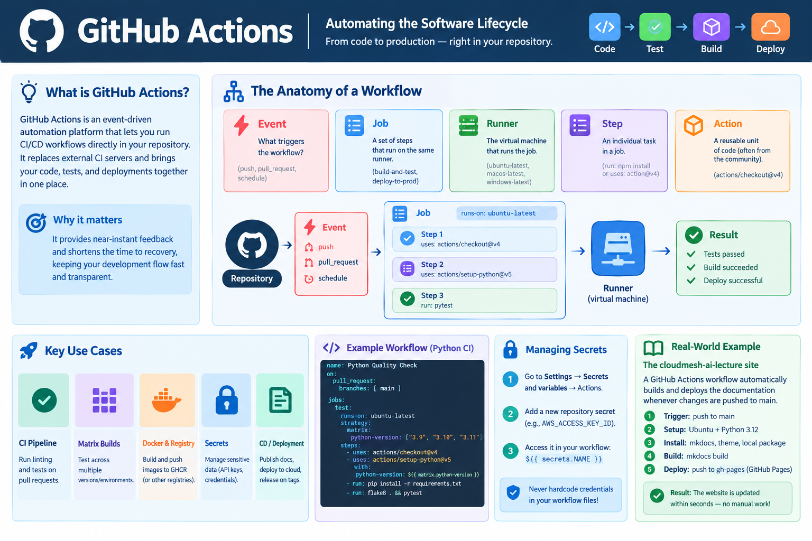

Automating the Software Lifecycle with GitHub Actions¶
Learning Objectives
- Define GitHub Actions and its role in modern CI/CD.
- Understand the core components of a workflow: Events, Jobs, Steps, and Actions.
- Implement a basic automation pipeline for testing and linting.
- Create a complex workflow including Docker image builds and registry pushes.
- Utilize Matrix builds to test across multiple environments.
- Manage sensitive data using GitHub Secrets.
Overview¶
In the modern DevOps era, the "integration" part of Continuous Integration (CI) has moved from dedicated servers (like Jenkins) directly into the source control platform. GitHub Actions is an event-driven automation platform that allows you to run complex workflows directly in your repository. Whether it is running a test suite every time a developer pushes code or deploying a website to a cloud provider, GitHub Actions eliminates the need for external CI infrastructure.
Why this matters
The "Time to Feedback" is the most critical metric in software development. If a developer has to wait hours to know if their change broke the build, productivity plummets. GitHub Actions provides near-instant feedback by triggering automation on every git push or pull_request. By integrating the CI/CD pipeline directly into the GitHub UI, the "code" and the "test" live in the same place, making the path to production transparent and auditable.


Figure 1: GitHub Actions architecture overview.
The Anatomy of a Workflow¶
A GitHub Action is defined by a Workflow file—a YAML document located in the .github/workflows/ directory of your repository.
Core Components¶
| Component | Description | Example |
|---|---|---|
| Event | The trigger that starts the workflow. | push, pull_request, schedule (cron) |
| Job | A set of steps that execute on the same runner. | build-and-test, deploy-to-prod |
| Runner | The virtual machine executing the job. | ubuntu-latest, macos-latest, windows-latest |
| Step | An individual task within a job. | run: npm install or uses: actions/checkout@v4 |
| Action | A reusable unit of code (often shared by the community). | actions/setup-python@v5 |
A Minimal Example¶
Here is a simple workflow that greets the user and checks the Python version:
name: Hello World Workflow
on: [push] # Trigger on every push
jobs:
greet:
runs-on: ubuntu-latest
steps:
- name: Say Hello
run: echo "Hello, CloudMesh AI Student!"
- name: Check Python
run: python --version
Advanced Pipeline Patterns¶
In professional environments, pipelines are rarely linear. They use parallelism and dependencies to optimize speed and reliability.
1. Matrix Builds (Cross-Environment Testing)¶
A Matrix allows you to run the same job across multiple combinations of variables (e.g., multiple Python versions) without duplicating the YAML.
jobs:
test:
runs-on: ubuntu-latest
strategy:
matrix:
python-version: ['3.9', '3.10', '3.11']
os: [ubuntu-latest, windows-latest]
steps:
- uses: actions/checkout@v4
- name: Set up Python ${{ matrix.python-version }}
uses: actions/setup-python@v5
with:
python-version: ${{ matrix.python-version }}
- run: python --version
2. Job Dependencies (needs)¶
You can ensure that a deployment only happens if the tests pass by using the needs keyword.
jobs:
test:
runs-on: ubuntu-latest
steps:
- run: echo "Running tests..."
deploy:
needs: test # Only runs if 'test' job completes successfully
runs-on: ubuntu-latest
steps:
- run: echo "Deploying to production..."
3. GitHub Environments & Approvals¶
For production releases, use Environments to add a manual approval gate.
jobs:
deploy-prod:
runs-on: ubuntu-latest
environment: production # Links to environment protection rules in GitHub Settings
steps:
- run: echo "Deploying to production environment..."
Implementing a CI Pipeline¶
In a real-world scenario, a CI pipeline doesn't just say "Hello"; it ensures code quality through linting and testing.
Python Testing Pipeline¶
This workflow triggers on every Pull Request to the main branch. It installs dependencies, runs a linter (flake8), and executes tests (pytest).
name: Python Quality Check
on:
pull_request:
branches: [ main ]
jobs:
test:
runs-on: ubuntu-latest
steps:
- name: Checkout code
uses: actions/checkout@v4
- name: Set up Python
uses: actions/setup-python@v5
with:
python-version: '3.11'
- name: Install dependencies
run: |
pip install flake8 pytest
pip install -r requirements.txt
- name: Lint with flake8
run: flake8 . --count --select=E9,F63,F7,F82 --show-source --statistics
- name: Run tests
run: pytest
Building and Publishing Container Images¶
Integrating container builds into your CI pipeline ensures that every verified commit is automatically packaged into an image ready for deployment.
name: Containerized Build
on:
push:
branches: [ main ]
jobs:
build-image:
runs-on: ubuntu-latest
steps:
- name: Checkout code
uses: actions/checkout@v4
- name: Set up Docker Buildx
uses: docker/setup-buildx-action@v3
- name: Login to GitHub Container Registry
uses: docker/login-action@v3
with:
registry: ghcr.io
username: ${{ github.actor }}
password: ${{ secrets.GITHUB_TOKEN }}
- name: Build and push
uses: docker/build-push-action@v5
with:
push: true
tags: ghcr.io/${{ github.repository }}:latest
AI/ML Workflows with GitHub Actions¶
Integrating AI/ML into your CI/CD pipeline requires handling specialized hardware and model lifecycle management.
1. GPU-Accelerated Training (Self-Hosted Runners)¶
Standard GitHub-hosted runners do not provide GPUs. For model training, you must use Self-Hosted Runners installed on your own GPU-enabled machines.
jobs:
train-model:
runs-on: [self-hosted, linux, gpu] # Use labels to target GPU nodes
steps:
- uses: actions/checkout@v4
- name: Train Model
run: python train.py --epochs 10
2. Model Registry Integration¶
Once trained, models should be versioned in a registry (e.g., Hugging Face) rather than stored in Git.
- name: Upload to Hugging Face
uses: huggingface/push-to-hub@v1
with:
token: ${{ secrets.HF_TOKEN }}
local_dir: ./model_artifacts
3. Automated Accuracy Validation¶
Prevent "model regression" by adding a validation gate that fails the pipeline if the new model's accuracy drops below a threshold.
- name: Validate Model
run: |
ACCURACY=$(python evaluate.py)
if (( $(echo "$ACCURACY < 0.85" | bc -l) )); then
echo "Accuracy too low: $ACCURACY"
exit 1
fi
Managing Secrets and Cloud Auth¶
Never hardcode API keys or passwords in your YAML files.
GitHub Secrets¶
Use GitHub Secrets for simple credentials:
1. Go to Settings -> Secrets and variables -> Actions.
2. Add a new repository secret (e.g., AWS_ACCESS_KEY_ID).
3. Access it in your workflow using the ${{ secrets.NAME }} syntax.
Modern Auth: OpenID Connect (OIDC)¶
For better security, avoid static keys entirely. Use OIDC to allow GitHub Actions to request short-lived tokens directly from your cloud provider (AWS, Azure, GCP). This eliminates the need to store long-lived secrets in GitHub.
Security Deep Dive
For a comprehensive guide on supply chain security, pinning actions to SHAs, and avoiding privilege escalation, see the GitHub Workflow Security Guide.
Case Study: Publishing the cloudmesh-ai-lecture¶
The cloudmesh-ai-lecture website is automatically published using a specialized GitHub Actions workflow located at .github/workflows/docs.yml. This is a prime example of Continuous Deployment (CD).
How it Works¶
Whenever a change is pushed to the main branch, the following sequence occurs:
- Trigger: The
on: push: branches: [main]event fires. - Environment Setup: A virtual machine (
ubuntu-latest) is provisioned, and Python 3.12 is installed. -
Dependency Installation:
-
The workflow installs
mkdocsandmkdocs-material. - It installs the custom
cloudmesh-ai-themedirectly from GitHub. -
It installs the local package in editable mode (
pip install -e.) so thatmkdocstringscan automatically extract documentation from the Python source code. -
Site Generation: The
mkdocs buildcommand transforms the Markdown files into a static HTML website. - Deployment: The
peaceiris/actions-gh-pagesaction takes the generated./sitefolder and pushes it to a special branch calledgh-pages. GitHub then automatically hosts this branch as a website.
Key Takeaway¶
This automation ensures that the documentation is always in sync with the code. If you fix a typo in a Markdown file and push to main, the live website is updated within seconds without any manual intervention.
Summary Checklist¶
- [ ] Can you explain the difference between an Event, a Job, and a Step?
- [ ] Do you know where to place workflow YAML files in a repository?
- [ ] Can you implement a basic linting and testing pipeline?
- [ ] Do you know how to use GitHub Secrets to store sensitive credentials?
- [ ] Can you configure a workflow to build and push a Docker image to GHCR?
Assignments¶
Assignment.1: The Linting Guard
Create a GitHub Actions workflow for a repository that prevents a Pull Request from being merged if the code doesn't pass a linter check (e.g., black or flake8).
Solution: The Linting Guard
Define a workflow with on: [pull_request]. Use actions/checkout@v4 and actions/setup-python@v5. Run pip install flake8 followed by flake8 .. If the command fails (exit code non-zero), the job fails, and GitHub marks the PR check as failed.
Assignment.2: The Image Factory
Design a workflow that builds a Docker image only when a new Tag (e.g., v1.0.0) is pushed to the repository, and then pushes that tagged image to a container registry.
Solution: The Image Factory
Use the trigger on: push: tags: ['v*']. Use docker/login-action@v3 and docker/build-push-action@v5 to build and push the image using the tag value provided by ${{ github.ref_name }}.
Assignment.3: The Open Source Contribution
Participating in a real project is an effective way to learn GitHub Actions.
1. Identify a small improvement, a typo fix, or a new documentation section in the cloudmesh-ai-lecture repository.
2. Create a new branch and commit your changes.
3. Open a Pull Request (PR).
4. Observe how the docs.yml workflow automatically triggers to validate your changes.
5. Engage with the maintainer in the PR comments and refine your contribution until it is approved and merged.
References¶
- GitHub Actions Documentation
- Workflow Syntax for GitHub Actions
- Understanding GitHub Actions Runners
Self-Evaluation¶
What is the difference between a Workflow, a Job, and a Step?
A Workflow is the overall automated process defined in a YAML file. A Job is a set of steps that run on the same runner (VM), allowing them to share a filesystem. A Step is an individual task within a job, which can either be a shell command (run) or a reusable action (uses).
How do I trigger a workflow using push and pull_request?
Workflows are triggered by events defined in the on: section. on: [push] triggers the workflow whenever code is pushed to any branch. on: [pull_request] triggers it when a PR is opened, synchronized, or reopened. You can further refine these triggers to specific branches or tags.
What are community actions and how are actions/checkout and actions/setup-python used?
Community actions are reusable units of code shared by the community to perform common tasks. actions/checkout@v4 is used to clone the repository onto the runner so that the workflow can access the code. actions/setup-python@v5 is used to install a specific version of Python on the runner, ensuring a consistent environment for tests.
How does a Matrix build help in testing multiple environments?
A Matrix allows you to run the same job across multiple combinations of variables (e.g., multiple Python versions or multiple operating systems) without duplicating the job definition. GitHub Actions spawns a separate job for each combination in the matrix, ensuring the code works across all target environments.
How do I securely manage credentials using GitHub Secrets?
Credentials should be stored in GitHub Secrets (found in repository settings). These are encrypted and not visible in the YAML file. They are accessed using the ${{ secrets.SECRET_NAME }} syntax, and GitHub automatically masks them in the workflow logs to prevent accidental exposure.
What's Next?¶
GitHub Actions represents the modern, integrated approach to CI/CD. To understand how these patterns evolved and how to handle more complex, self-hosted orchestration, head over to The Universal Orchestrator: Jenkins.